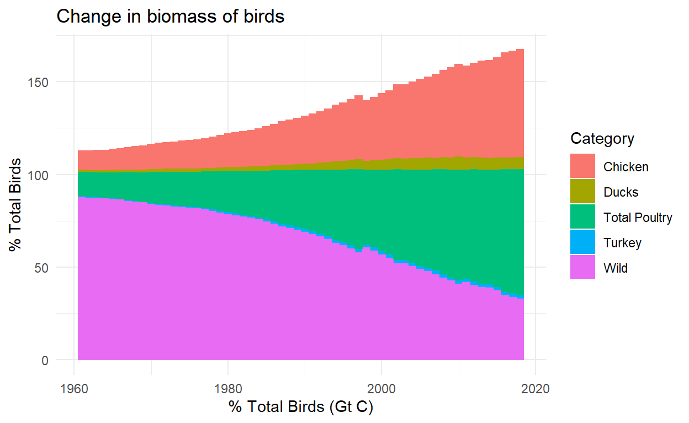
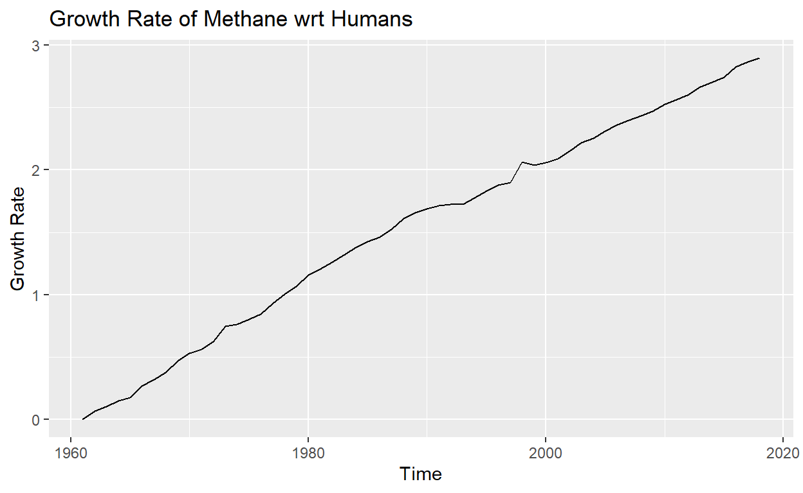
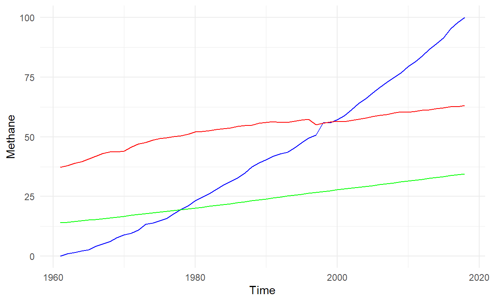
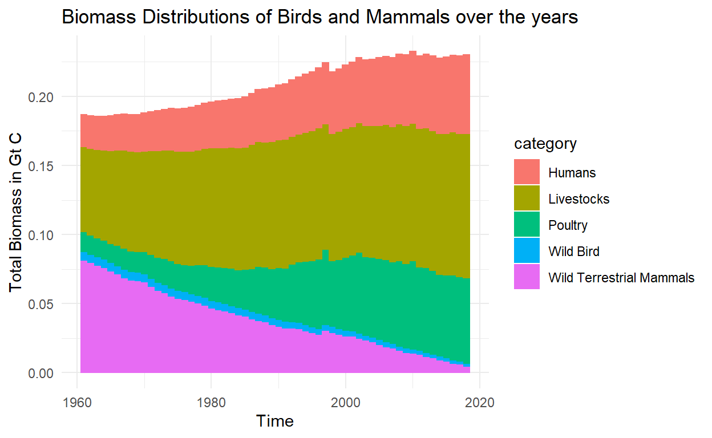

INTRODUCTION
This project helps in properly visualising as well as undersanding the rapid change in biomass distribution in the last ~60 years. Bar-On, Phillips, and Milo (2018) It is a way to fact check all the different headlines that have been going around recently like how humans contribution to the present state of the planet has been more than 83% but by themselves they only make up 0.01% of the life present on earth. “Humans Just 0.01” (2018)
How the population sizes of mammals, fish, birds, reptiles, and amphibians have declined an average of 68% between 1970 and 2016, according to World Wildlife Fund’s (WWF) Living Planet Report 2020. Populations in Latin America and the Caribbean have fared worst, with an average decline of 94%. Global freshwater species have also been disproportionately impacted, declining 84% on average. As an important indicator of planetary health, these drastic species population trends signal a fundamentally broken relationship between humans and the natural world, the consequences of which—as demonstrated by the ongoing COVID-19 pandemic—can be catastrophic. @wwf_2020
In order better understand the actual meaning behind these numbers, biomass distribution has been used which can be used to depict the size of a species with respect to all the lifeforms.
DATA
This project consists of data pulled from 2006 IPCC Guidelines for National Greenhouse Gas Inventories (“2006 IPCC Guidelines for NATIONAL Greenhouse Gas Inventories” (n.d.)) and Food and Agriculture Organization of the United Nations (“FAO Global Statistical Yearbook, FAO Regional Statistical Yearbooks” (n.d.)) for data regarding the mass index and distribution of poultry and livestock in different regions of the world (North and Latin America, Asia, Indian Subcontinent, Oceania and Africa). The aim of this project was to map out the change in the biomass distribution and analyze how human activities have affected the environment in the past 60 years. The main focus will be on terrestrial lifeforms (animals) and humans.
The project can be broken down into two sections: Wrangling and Visualization. As I will be referring to various data sets in this project, cleaning and structuring is a big part of it.
WRANGLING
70% humany body is water => 30% carbon x 50% carbon out of the dry weight. Also the average of the human body is being assumed at 50 kgs. Also, 1kg is equal to 0.15 C which is stored in the variableto_carbon Hern (1999). bird_bm and mammal_bm store the total biomass of the birds and mammals on earth and wild_animal_biomass stores the total biomass of the wild animals on earth. These values have been used as constants in this notebook for easy conversion. For this project, the total biomass on earth has been assumed to be ~550 Gt C, being such a large number any change in it is bound to be insignificant concerning only a span of 60 years.
regions <- sort(c("Africa", "Latin America", "Asia", "Eastern Europe", "Northern America", "Oceania", "Indian Subcontinent", "Western Europe" ))
converter = 1000*0.15/1e15 #kg to Gt
wild_animal_biomass = 550 * 3 * 1e-6
birds_bm = 0.007 #Gt C
mammmal_bm = 550 * 3 * 1e-4
to_carbon = 0.15
human_carbon_mass = 5e4 * to_carbon
human_pop <- readxl::read_excel("../../_data/Data_Extract_From_World_Development_Indicators.xlsx") %>% slice(1) %>%
select(! contains("Series") & ! contains("Country")) %>%
pivot_longer(cols = names(.),names_to = "Year", values_to = "Population") %>%
mutate(Year = as.numeric(str_extract(Year, '[^\\s]+'))) %>%
mutate(`Total Biomass (Gt C)` = as.double(`Population`) * human_carbon_mass * 1e-15) %>%
mutate(`% Mammal Biomass (Gt C)` = `Total Biomass (Gt C)` / (mammmal_bm * 1e-2))
tail(human_pop)
# A tibble: 6 x 4
Year Population `Total Biomass (Gt C)` `% Mammal Biomass (Gt C)`
<dbl> <dbl> <dbl> <dbl>
1 2013 7169675197 0.0538 32.6
2 2014 7254292848 0.0544 33.0
3 2015 7339076654 0.0550 33.4
4 2016 7424484741 0.0557 33.7
5 2017 7509410228 0.0563 34.1
6 2018 7592475615 0.0569 34.5Loading the mass Index for poultry and modifying the Area name and Region as per the requirement, the areas under focus have been listed down below
birds_index <- read.csv('../../_data/birds.csv') %>%
mutate(Area = case_when(
Area == "Southern Asia" ~ "Indian Subcontinent",
Area == "Americas" ~ "Latin America",
TRUE ~ Area
)) %>%
filter(Area %in% regions) %>%
arrange(Area, Item)
head(birds_index)
ï..Domain.Code Domain Area.Code Area Element.Code Element
1 QA Live Animals 5100 Africa 5112 Stocks
2 QA Live Animals 5100 Africa 5112 Stocks
3 QA Live Animals 5100 Africa 5112 Stocks
4 QA Live Animals 5100 Africa 5112 Stocks
5 QA Live Animals 5100 Africa 5112 Stocks
6 QA Live Animals 5100 Africa 5112 Stocks
Item.Code Item Year.Code Year Unit Value Flag
1 1057 Chickens 1961 1961 1000 Head 274201 A
2 1057 Chickens 1962 1962 1000 Head 282821 A
3 1057 Chickens 1963 1963 1000 Head 292008 A
4 1057 Chickens 1964 1964 1000 Head 305707 A
5 1057 Chickens 1965 1965 1000 Head 316576 A
6 1057 Chickens 1966 1966 1000 Head 330808 A
Flag.Description
1 Aggregate, may include official, semi-official, estimated or calculated data
2 Aggregate, may include official, semi-official, estimated or calculated data
3 Aggregate, may include official, semi-official, estimated or calculated data
4 Aggregate, may include official, semi-official, estimated or calculated data
5 Aggregate, may include official, semi-official, estimated or calculated data
6 Aggregate, may include official, semi-official, estimated or calculated dataunique(as.data.frame(birds_index[,"Area"]))
birds_index[, "Area"]
1 Africa
291 Asia
581 Eastern Europe
813 Indian Subcontinent
1045 Latin America
1277 Northern America
1509 Oceania
1741 Western Europechicken <- filter(birds_index, Item == "Chickens") %>%
select(Area, Year, Value) %>%
pivot_wider(names_from = Area, values_from = Value) %>%
mutate(`Latin America` = `Latin America` - `Northern America`, Asia = Asia - `Indian Subcontinent`) %>%
column_to_rownames('Year')
head(chicken)
Africa Asia Eastern Europe Indian Subcontinent Latin America
1961 274201 918518 623953 172296 365212
1962 282821 962503 672343 176622 373697
1963 292008 1001039 689495 186306 395109
1964 305707 1040895 623901 193017 423850
1965 316576 1078200 638318 199930 428824
1966 330808 1108430 671476 209242 441242
Northern America Oceania Western Europe
1961 821016 26304 361024
1962 847087 27059 364607
1963 847720 27313 365832
1964 863594 27991 380597
1965 904276 28949 386324
1966 926914 29316 349822chicken_layers and is formatted to match the table above.
chicken_layers <- read.csv('../../_data/FAOSTAT_egg_chicken.csv') %>%
mutate(Area = case_when(
Area == "Southern Asia" ~ "Indian Subcontinent",
Area == "Americas" ~ "Latin America",
TRUE ~ Area
)) %>%
filter(Area %in% regions & Element == "Laying") %>%
arrange(Area) %>%
select(Area, Year, Value) %>%
pivot_wider(names_from = Area, values_from = Value) %>%
mutate(`Latin America` = `Latin America` - `Northern America`, Asia = Asia - `Indian Subcontinent`) %>%
column_to_rownames('Year')
head(chicken_layers)
Africa Asia Eastern Europe Indian Subcontinent Latin America
1961 122114 546011 393793 56750 150247
1962 126039 575480 405868 61033 151731
1963 129208 568808 390208 64255 153821
1964 134420 593492 384892 65305 160602
1965 141982 614320 414677 69055 171345
1966 145630 628879 438041 74105 167284
Northern America Oceania Western Europe
1961 323081 18033 167066
1962 326236 18301 163560
1963 323869 17925 164074
1964 327459 18117 169345
1965 327171 19248 168955
1966 329247 19579 199529chicken_all where the added weights are converted into Biomass(Gt C) then the actual %age of Total Biomass is calculated as well. The chicken_all dataframe adds both the dataframes together. The sum of all the regions are added based on the year using rowSums() and the %Total Birds mass is calculated using the constant birds_bm
chicken_broilers <- (chicken - chicken_layers)*0.9
chicken_layers <- (chicken_layers)* 1.8
chicken_all <- (chicken_broilers + chicken_layers) %>%
rowSums() %>%
as.data.frame() * converter
names(chicken_all)[1] <- "Total Biomass (Gt C)"
chicken_all <- chicken_all %>%
mutate(`% Total Birds` = (`Total Biomass (Gt C)`/birds_bm) * 1e5) %>%
mutate(`Total Biomass (Gt C)` = `Total Biomass (Gt C)` * 1e-1)
tail(chicken_all)
Total Biomass (Gt C) % Total Birds
2013 3.656286e-07 52.23266
2014 3.694877e-07 52.78396
2015 3.786571e-07 54.09388
2016 3.962678e-07 56.60968
2017 4.023285e-07 57.47550
2018 4.086130e-07 58.37328ducks(Turkeys) from bird_index similarly as chickens before. The ducks_all(Turkey_all) then adds all the different regions together which is then multiplied by their avg weight (as per “2006 IPCC Guidelines for NATIONAL Greenhouse Gas Inventories” (n.d.)) of 2.7 and then converted into Gt C using converter.
ducks <- filter(birds_index, Item == 'Ducks') %>%
select(Area, Year, Value) %>%
pivot_wider(names_from = Area, values_from = Value) %>%
column_to_rownames('Year') %>%
mutate(`Latin America` = `Latin America` - `Northern America`, Asia = Asia - `Indian Subcontinent`)
ducks_all <- ducks %>%
rowSums() %>%
as.data.frame() * converter * 2.7
names(ducks_all)[1] <- "Total Biomass (Gt C)"
ducks_all <- ducks_all %>%
#mutate(`% Total Animal Biomass (Gt C)` = `Total Biomass (Gt C)`/(wild_animal_biomass)) %>%
mutate(`% Total Birds` = `Total Biomass (Gt C)`/birds_bm) * 1e5
head(ducks_all)
Total Biomass (Gt C) % Total Birds
1961 0.007619913 1.088559
1962 0.007960680 1.137240
1963 0.008356851 1.193836
1964 0.008590374 1.227196
1965 0.008861400 1.265914
1966 0.009144859 1.306409Turkey <- filter(birds_index, Item == 'Turkeys') %>%
select(Area, Year, Value) %>%
pivot_wider(names_from = Area, values_from = Value) %>%
column_to_rownames('Year') %>%
mutate(`Latin America` = `Latin America` - `Northern America`, Asia = Asia - `Indian Subcontinent`)
Turkey_all <- Turkey %>%
rowSums() %>%
as.data.frame() * converter * 2.7
names(Turkey_all)[1] <- "Total Biomass (Gt C)"
Turkey_all <- Turkey_all %>%
#mutate(`% Total Animal Biomass (Gt C)` = `Total Biomass (Gt C)`/(wild_animal_biomass)) %>%
mutate(`% Total Birds` = `Total Biomass (Gt C)`/birds_bm) * 1e5
head(Turkey_all)
Total Biomass (Gt C) % Total Birds
1961 0.007942334 1.1346191
1962 0.006744587 0.9635124
1963 0.006216345 0.8880493
1964 0.005902389 0.8431984
1965 0.005909071 0.8441531
1966 0.006389240 0.9127485Livestock index loads the dataset on the weight of livestocks in different regions of the world as per the “2006 IPCC Guidelines for NATIONAL Greenhouse Gas Inventories” (n.d.). The columns are renamed and rearranged as per the requirement
livestock_index <- read.csv("../../_data/animal_weight.csv",
col.names = c('Area','Cattle_dairy', 'Cattle_non_dairy', 'Buffaloes','Swine_market', 'Swine_breeding', 'd', 'd', 'd', 'd', 'Sheep', 'Goats', 'Horses','Asses', 'Mules','Camels', 'd')
) %>%
select(! starts_with("d")) %>%
filter(! Area == "Middle east") %>%
arrange(Area) %>%
column_to_rownames('Area')
livestock_index
Cattle_dairy Cattle_non_dairy Buffaloes
Africa 275 173 380
Asia 350 391 380
Eastern Europe 550 391 380
Indian Subcontinent 275 110 295
Latin America 400 305 380
Northern America 604 389 380
Oceania 500 330 380
Western Europe 600 420 380
Swine_market Swine_breeding Sheep Goats Horses
Africa 28 28 28.0 30.0 238
Asia 50 180 48.5 38.5 377
Eastern Europe 50 180 48.5 38.5 377
Indian Subcontinent 28 28 28.0 30.0 238
Latin America 28 28 28.0 30.0 238
Northern America 46 198 48.5 38.5 377
Oceania 45 180 48.5 38.5 377
Western Europe 50 198 48.5 38.5 377
Asses Mules Camels
Africa 130 130 217
Asia 130 130 217
Eastern Europe 130 130 217
Indian Subcontinent 130 130 217
Latin America 130 130 217
Northern America 130 130 217
Oceania 130 130 217
Western Europe 130 130 217wrangling_livestock function has been created which helps in loading the FAOSTAT_livestock data(in most cases) and then filtering them out based on the category.
wrangling_livestock <- function (category, file_name = "FAOSTAT_livestock"){
temp <- read.csv(sprintf('../../_data/%s.csv', file_name)) %>%
mutate(Area = case_when(
Area == "Southern Asia" ~ "Indian Subcontinent",
Area == "Americas" ~ "Latin America",
TRUE ~ as.character(Area)
)) %>%
filter(Area %in% regions) %>%
arrange(Area, Item) %>%
filter(Item == sprintf('%s', category)) %>%
select(Area, Year, Value) %>%
pivot_wider(names_from = Area, values_from = Value) %>%
column_to_rownames('Year') %>%
mutate(`Latin America` = `Latin America` - `Northern America`, Asia = Asia - `Indian Subcontinent`)
return(temp)
}
FAOSTAT_cattle_dairy.csv which is then filtered to match the regions which we are focussing on. Due to different column naming wrangling_livestock function is skipped but is to load data on non-dairy cattles.
cattle_dairy <- read.csv('../../_data/FAOSTAT_cattle_dairy.csv') %>%
mutate(Area = case_when(
Area == "Southern Asia" ~ "Indian Subcontinent",
Area == "Americas" ~ "Latin America",
TRUE ~ Area
)) %>%
filter(Area %in% regions) %>%
arrange(Area, Item) %>%
filter(Element == 'Milk Animals') %>%
select(Area, Year, Value) %>%
pivot_wider(names_from = Area, values_from = Value) %>%
column_to_rownames('Year') %>%
mutate(`Latin America` = `Latin America` - `Northern America`, Asia = Asia - `Indian Subcontinent`)
cattle <- wrangling_livestock('Cattle') - cattle_dairy
head(cattle)
Africa Asia Eastern Europe Indian Subcontinent
1961 105529681 86089461 51332404 198560283
1962 107228969 83195165 56757782 200223885
1963 109072042 85148252 60337536 201085315
1964 112410585 87364184 58670982 205939424
1965 115554186 91991748 60065138 206173971
1966 115675777 92478459 66390091 201876014
Latin America Northern America Oceania Western Europe
1961 158687950 88166740 18975600 27582914
1962 162380226 91504879 19729034 29253640
1963 162233211 96536759 20297538 29125845
1964 168267429 100998695 20968039 28375526
1965 175688128 103289512 20898726 28795538
1966 181666686 104017227 20502454 30221061head(cattle_dairy)
Africa Asia Eastern Europe Indian Subcontinent
1961 17007415 6862907 45941801 27498908
1962 17237363 7316815 47520221 25057900
1963 17390909 7490111 48870567 24423500
1964 17747291 7761084 49030454 23406763
1965 18469973 7924174 49501925 22818605
1966 19118918 8270102 50004087 28560745
Latin America Northern America Oceania Western Europe
1961 17161126 20230855 5115736 19921153
1962 17531215 19798540 5224001 20012785
1963 18210796 19175636 5286648 19724129
1964 18519113 18584172 5125422 19515994
1965 19151689 17840320 5081390 19749062
1966 20170925 16748828 5034903 19855998livestock_index dataframe, the resulting dfs are then added togehter and stored in cattle_all where all the different regions are summed together based on the year to get the total biomass/year as well %age total biomass/year
for (r in 1:length(regions)){
cattle[regions[r]] <- as.double(livestock_index[regions[r],'Cattle_non_dairy']) * cattle[regions[r]]
cattle_dairy[regions[r]] <- as.double(livestock_index[regions[r],'Cattle_dairy']) * cattle_dairy[regions[r]]
}
cattle_all <- (cattle + cattle_dairy) %>%
rowSums() %>%
as.data.frame()%>%
`colnames<-`(c("Total Biomass (Gt C)")) %>%
mutate(`Total Biomass (Gt C)` = `Total Biomass (Gt C)`* converter) %>%
mutate(`% Mammal Biomass (Gt C)` = `Total Biomass (Gt C)`/(mammmal_bm*1e-2))
head(cattle_all)
Total Biomass (Gt C) % Mammal Biomass (Gt C)
1961 0.04018161 24.35249
1962 0.04097010 24.83036
1963 0.04172734 25.28930
1964 0.04238290 25.68660
1965 0.04335895 26.27815
1966 0.04436850 26.89000
For swine(pigs) the “2006 IPCC Guidelines for NATIONAL Greenhouse Gas Inventories” (n.d.) assumption is assumed here where close to 90% of them are used for breeding and only 1% are available for market. Based on this assumption swine_breeding and swine_market dataframes are created using the wrangling_livestock function (loading FAOSTAT_livestock.csv) and then multiplied by their respective weights in different regions. These are then combined to form swine_all where using rowSums the data is categorized into Total Biomass/year and %age Total Mammal Biomass/year.
swine_breeding <- wrangling_livestock("Pigs") * 0.9
swine_market <- swine_breeding / 9
for (r in 1:length(regions)){
swine_breeding[regions[r]] <- as.double(livestock_index[regions[r],'Swine_breeding']) * swine_breeding[regions[r]]
swine_market[regions[r]] <- as.double(livestock_index[regions[r],'Swine_market']) * swine_market[regions[r]]
}
swine <- (swine_breeding + swine_market)
swine_all <- swine %>%
rowSums() %>%
as.data.frame() %>%
`colnames<-`(c("Total Biomass (Gt C)")) %>%
mutate(`Total Biomass (Gt C)` = `Total Biomass (Gt C)` * converter) %>%
mutate(`% Mammal Biomass (Gt C)` = `Total Biomass (Gt C)`/(mammmal_bm*1e-2))
head(swine_all)
Total Biomass (Gt C) % Mammal Biomass (Gt C)
1961 0.008243982 4.996352
1962 0.008659171 5.247982
1963 0.009241365 5.600827
1964 0.009410881 5.703564
1965 0.010282287 6.231689
1966 0.010649067 6.453980buffaloes <- read.csv('../../_data/FAOSTAT_livestock.csv') %>%
mutate(Area = case_when(
Area == "Southern Asia" ~ "Indian Subcontinent",
Area == "Americas" ~ "Latin America",
TRUE ~ Area
)) %>%
filter(Area %in% regions) %>%
arrange(Area, Item) %>%
filter(Item == "Buffaloes") %>%
select(Area, Year, Value) %>%
pivot_wider(names_from = Area, values_from = Value) %>%
column_to_rownames('Year') %>%
mutate(Asia = Asia - `Indian Subcontinent`, `Western Europe` = 0) %>%
cbind(`Northern America` = 0)
for (r in 1:length(regions)){
buffaloes[regions[r]] <- (buffaloes[regions[r]] * as.double(livestock_index[r, "Buffaloes"]))
}
buffaloes_all <- buffaloes %>%
rowSums() %>%
as.data.frame() %>%
`colnames<-`(c("Total Biomass (Gt C)")) %>%
mutate(`Total Biomass (Gt C)` = `Total Biomass (Gt C)` * converter) %>%
mutate(`% Mammal Biomass (Gt C)` = `Total Biomass (Gt C)`/(mammmal_bm*1e-2))
head(buffaloes_all)
Total Biomass (Gt C) % Mammal Biomass (Gt C)
1961 0.004257691 2.580419
1962 0.004305583 2.609444
1963 0.004329264 2.623797
1964 0.004517807 2.738065
1965 0.004568208 2.768611
1966 0.004810559 2.915490Sheeps, Goats, Horses, asses and mules follow the same procedure as in cattle and their final values are stored sheep_all, horses_all, asses_all and mules_all respectively.
sheep <- wrangling_livestock("Sheep")
for (r in 1:length(regions)){
sheep[regions[r]] <- (sheep[regions[r]] * as.double(livestock_index[r, "Sheep"]))
}
sheep_all <- sheep %>%
rowSums() %>%
as.data.frame() %>%
`colnames<-`(c("Total Biomass (Gt C)")) %>%
mutate(`Total Biomass (Gt C)` = `Total Biomass (Gt C)` * converter) %>%
mutate(`% Mammal Biomass (Gt C)` = `Total Biomass (Gt C)`/(mammmal_bm*1e-2))
head(sheep_all)
Total Biomass (Gt C) % Mammal Biomass (Gt C)
1961 0.005442698 3.298605
1962 0.005478983 3.320596
1963 0.005519002 3.344850
1964 0.005605461 3.397249
1965 0.005692616 3.450070
1966 0.005742036 3.480022goat <- wrangling_livestock("Goats")
for (r in 1:length(regions)){
goat[regions[r]] <- goat[regions[r]] * as.double(livestock_index[r, "Goats"])
}
goat_all <- goat %>%
rowSums() %>%
as.data.frame() %>%
`colnames<-`(c("Total Biomass (Gt C)")) %>%
mutate(`Total Biomass (Gt C)` = `Total Biomass (Gt C)`*converter) %>%
mutate(`% Mammal Biomass (Gt C)` = `Total Biomass (Gt C)`/(mammmal_bm*1e-2))
head(goat_all)
Total Biomass (Gt C) % Mammal Biomass (Gt C)
1961 0.001663703 1.008305
1962 0.001747766 1.059252
1963 0.001784774 1.081682
1964 0.001775618 1.076132
1965 0.001765696 1.070119
1966 0.001770902 1.073274horses <- wrangling_livestock("Horses")
for (r in 1:length(regions)){
horses[regions[r]] <- (horses[regions[r]] * as.double(livestock_index[r, "Goats"]))
}
horses_all <- horses %>%
rowSums() %>%
as.data.frame() %>%
`colnames<-`(c("Total Biomass (Gt C)")) %>%
mutate(`Total Biomass (Gt C)` = `Total Biomass (Gt C)`* converter) %>%
mutate(`% Mammal Biomass (Gt C)` = `Total Biomass (Gt C)`/(mammmal_bm*1e-2))
head(horses_all)
Total Biomass (Gt C) % Mammal Biomass (Gt C)
1961 0.0003073617 0.1862798
1962 0.0002959165 0.1793433
1963 0.0002889394 0.1751148
1964 0.0002845318 0.1724435
1965 0.0002904977 0.1760592
1966 0.0002938808 0.1781096mules <- wrangling_livestock("Mules")
mules_all <- (mules*130*converter) %>%
rowSums() %>%
as.data.frame() %>%
#mutate(`% Biomass (Gt C)` = `.`/(wild_animal_biomass * 1e-2)) %>%
mutate(`% Mammal Biomass (Gt C)` = `.`/(mammmal_bm*1e-2)) %>%
`colnames<-`(c("Total Biomass (Gt C)", "% Mammal Biomass (Gt C)"))
head(mules_all)
Total Biomass (Gt C) % Mammal Biomass (Gt C)
1961 0.0001676369 0.1015981
1962 0.0001791703 0.1085880
1963 0.0001708586 0.1035507
1964 0.0001764372 0.1069317
1965 0.0001784144 0.1081299
1966 0.0001813179 0.1098896asses <- wrangling_livestock("Asses")
asses_all <- (asses*130*converter) %>%
rowSums() %>%
as.data.frame() %>%
#mutate(`% Biomass (Gt C)` = `.`/(wild_animal_biomass * 1e-2)) %>%
mutate(`% Mammal Biomass (Gt C)` = `.`/(mammmal_bm*1e-2)) %>%
`colnames<-`(c("Total Biomass (Gt C)", "% Mammal Biomass (Gt C)"))
head(asses_all)
Total Biomass (Gt C) % Mammal Biomass (Gt C)
1961 0.0006781587 0.4110053
1962 0.0006521343 0.3952329
1963 0.0006479494 0.3926966
1964 0.0006640885 0.4024779
1965 0.0006817642 0.4131905
1966 0.0006959867 0.4218101camels <- read.csv('../../_data/FAOSTAT_livestock.csv') %>%
mutate(Area = case_when(
Area == "Southern Asia" ~ "Indian Subcontinent",
Area == "Americas" ~ "Latin America",
TRUE ~ Area
)) %>%
filter(Area %in% regions) %>%
arrange(Area, Item) %>%
filter(Item == "Camels") %>%
select(Area, Year, Value) %>%
pivot_wider(names_from = Area, values_from = Value) %>%
column_to_rownames('Year') %>%
mutate(Asia = Asia - `Indian Subcontinent`, `Western Europe` = 0) %>%
cbind(`Northern America` = 0, `Latin America` = 0, `Oceania` = 0)
camels_all <- (camels*217*converter) %>%
rowSums() %>%
as.data.frame() %>%
#mutate(`% Biomass (Gt C)` = `.`/(wild_animal_biomass * 1e-2)) %>%
mutate(`% Mammal Biomass (Gt C)` = `.`/(mammmal_bm*1e-2)) %>%
`colnames<-`(c("Total Biomass (Gt C)", "% Mammal Biomass (Gt C)"))
head(camels_all)
Total Biomass (Gt C) % Mammal Biomass (Gt C)
1961 0.0004207621 0.2550073
1962 0.0004283833 0.2596262
1963 0.0004431511 0.2685764
1964 0.0004608473 0.2793014
1965 0.0004746598 0.2876726
1966 0.0004953378 0.3002047poultry <- (chicken_all + Turkey_all + ducks_all) %>%
select(`Total Biomass (Gt C)`, `% Total Birds`)
wild_birds <- poultry %>%
mutate(`Total Biomass (Gt C)` = (100 - `% Total Birds`) * birds_bm * 1e-2) %>%
mutate(`% Total Birds` = (100 - `% Total Birds`))
livestocks <- (cattle_all + buffaloes_all + sheep_all + goat_all + horses_all + mules_all + asses_all + camels_all + swine_all) %>%
select(`Total Biomass (Gt C)`, `% Mammal Biomass (Gt C)`)
wild_animal_biomass <- livestocks %>%
mutate(`Total Biomass (Gt C)` = (100 - `% Mammal Biomass (Gt C)`) * mammmal_bm*1e-2 - human_pop$`Total Biomass (Gt C)`) %>%
mutate(`% Mammal Biomass (Gt C)` = (100 - `% Mammal Biomass (Gt C)` - human_pop$`% Mammal Biomass (Gt C)`))
VISUALIZATION
The graph below helps in the visualization of the change in biomass of the birds from 1961-2018. It is easy to observe from it that there has been a drastic drop in the wild bird population; from occupying more than 60% of the total biomass of the birds they have dropped to 30% in 2018 whereas the poultry is occupying more than 60%.rbind(cbind(chicken_all, Category = "Chicken"), cbind(Turkey_all, Category = "Turkey"), cbind(ducks_all, Category = "Ducks"), cbind(wild_birds, Category = "Wild"), cbind(poultry, Category = "Total Poultry")) %>%
mutate(Time = rep(seq.Date(as.Date('1961-01-01'), length = 58, by = "1 year"),5)) %>%
ggplot(aes(Time, `% Total Birds`, color = Category, fill = Category)) +
geom_bar(stat = "identity") + theme_minimal() +
labs(title = "Change in biomass of birds", x = "% Total Birds (Gt C)")

rbind(cbind(cattle_all, Category = "Cattle"), cbind(swine_all, Category = "Swine"), cbind(buffaloes_all, Category = "Buffaloes"), cbind(wild_animal_biomass, Category = "Wild"), cbind(livestocks, Category = "Total Livestock"), cbind(sheep_all, Category = "Sheep"), cbind(goat_all, Category = "Goat"), cbind(horses_all, Category = "Horses"), cbind(mules_all, Category = "Mules"), cbind(asses_all, Category = "Asses"), cbind(camels_all, Category = "Camels"), cbind(human_pop[, c("Total Biomass (Gt C)","% Mammal Biomass (Gt C)")], Category = "Humans")) %>%
mutate(Time = rep(seq.Date(as.Date('1961-01-01'), length = 58, by = "1 year"),12)) %>%
ggplot(aes(Time, `% Mammal Biomass (Gt C)`, fill = Category, color = Category)) +
geom_bar(stat = "identity") + theme_minimal()

methane <- read.csv("../../_data/ghg-concentrations_fig-1.csv", skip = 6) %>%
slice(1860:1964) %>%
`colnames<-`(c("Year", "d", "Methane (ppm of C02)")) %>%
select(contains("e")) %>%
fill(`Methane (ppm of C02)`, .direction = "updown")%>%
filter(as.numeric(Year) %in% human_pop$Year) %>%
slice(-c(38))
head(methane)
Year Methane (ppm of C02)
1 1961 317.6
2 1962 318.5
3 1963 319.0
4 1964 319.6
5 1965 320.0
6 1966 321.4livestocks %>%
mutate(Methane = methane$`Methane (ppm of C02)`, Time = seq.Date(as.Date('1961-01-01'), length = 58, by = "1 year"), Humans = human_pop$`% Mammal Biomass (Gt C)`) %>%
mutate(Methane = sapply(Methane, function(x){
return (100*(x- min(Methane))/(max(Methane) - min(Methane)))
}) ) %>%
mutate(factor = Methane/Humans) %>%
ggplot(aes(x = Time)) +
geom_line(aes(y = factor)) +
labs(y = "Growth Rate", title = "Growth Rate of Methane wrt Humans")

livestocks %>%
mutate(Methane = methane$`Methane (ppm of C02)`, Time = seq.Date(as.Date('1961-01-01'), length = 58, by = "1 year"), Humans = human_pop$`% Mammal Biomass (Gt C)`) %>%
mutate(Methane = sapply(Methane, function(x){
return (100*(x- min(Methane))/(max(Methane) - min(Methane)))
}) ) %>%
ggplot(aes(Time)) +
geom_line(aes(y = Methane), color = "blue", fill = "blue", stat = "identity") +
geom_line(aes(y = `% Mammal Biomass (Gt C)`), color = "red", fill = "red", stat = "identity") +
geom_line(aes(y = Humans), color = "green", fill = "green", stat = "identity") + theme_minimal()

as.data.frame(rbind(cbind(poultry$`Total Biomass (Gt C)`, category = "Poultry"), cbind(livestocks$`Total Biomass (Gt C)`, category = "Livestocks"), cbind(wild_birds$`Total Biomass (Gt C)`, category = "Wild Bird"), cbind(wild_animal_biomass$`Total Biomass (Gt C)`, category = "Wild Terrestrial Mammals"), cbind(human_pop$`Total Biomass (Gt C)`, category = "Humans"))) %>%
mutate(Time = rep(seq.Date(as.Date('1961-01-01'), length = 58, by = "1 year"), 5), `Total Biomass` = (as.numeric(V1))) %>%
ggplot(aes(x = Time, y = `Total Biomass`, fill = category, color = category)) +
geom_bar(stat = "identity") +
theme_minimal() +
labs(title = "Biomass Distributions of Birds and Mammals over the years", y = "Total Biomass in Gt C")

REFLECTION Due to dealing with multiple(10) sheets in this project, I had to deal with repetitive coding as structure of each sheet was different.I have used piping extensively in this project in order to decrease the number of variables. I decided to focus on poultry, livestock and humans in this project as I wanted to showcase human impact. I dived deep and segregated the data as much as possible to get an accurate result. For the purpose of maintaining standards and to be able to compare it with actual results in the world I decided to follow IPCC and FAOSTAT for all the information regarding weight and population. As the data was classified on the basis of the regions, I chose to focus on different regions of the world based on the geography. As a result I ended up separating Asia into Asia and Indian Subcontinent and clubbing Australia and surrounding countries Oceania. Also, a major assumption made is that the total biomass on earth 550 Gt C. Although I ended up merging all of the regions together for the sake of visualization, if allowed to continue this project I would like to study all of the different regions separately as well as this might give insights on which region is experiencing most of the changes. Desertification is major problem in Africa and is surely to be major factor in the obtained results
INFERENCE
Though we have been aware of climate change and importance of a healthy Eco-system for more than three decades, the continuing sharp decline in the wild is concerning and proves that we are much farther away from a solution than we think. Though this project focuses on biomass distribution over the years some of the information can be linked with present situations to get verify the current situations. The rapid decline in the wildlife population is also an indication to the rapid deforestation, which has been a rising problem over the years. Besides this, we can also observe how the livestock have almost doubled in population when compared to humans. Today, the global cattle population amounted to about one billion, which makes it increasingly believable than Iceland has more sheep than human (that’s close to 3 sheep per person). This also,raises the topic of till what time will earth be able to sustain the growing food demands. Earth Overshoot Day is the date that marks that we have consumed all the resources that our planet is capable of generating in one year. Each year it is calculated by dividing the planet’s bio capacity by humanity’s ecological footprint and multiplying by 365, for the number of days in a year. In 2021, 29th July was the Earth Overshoot Day. It was first recorded in 1970 and the overshoot day was 29 December.